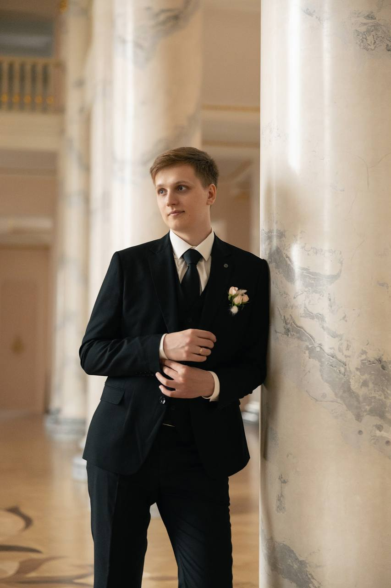
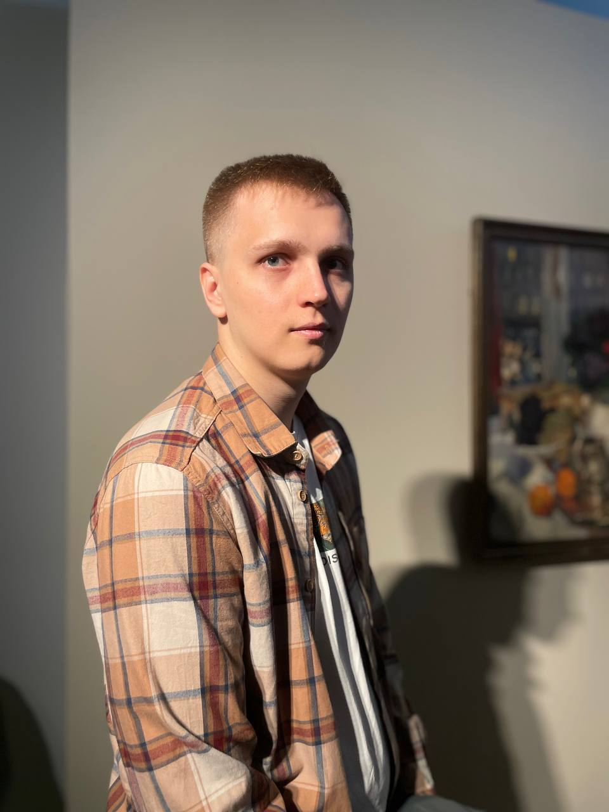
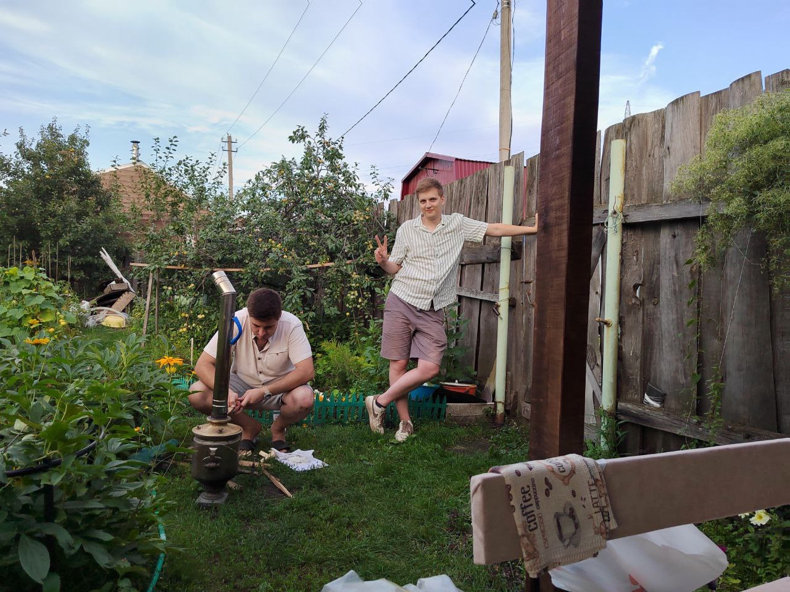
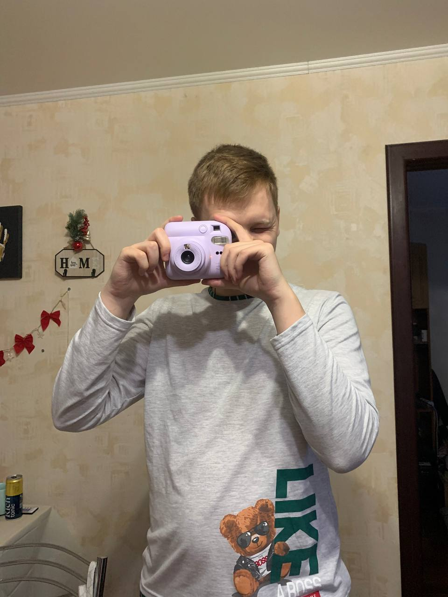

О себе
Добро пожаловать! Меня зовут Роман Манойло. Я Старший Инженер-технолог по механической обработке с 9+ годами опыта в данной сфере деятельности. На протяжении своей карьеры я занимался не только сложными проектами с нуля, но и так же помогал другим инженерам расти в данном направлении, обучал вновь трудоустроившихся колег сложным производственным процессам и помогал максимально быстро влиться в рабочий процесс.
Так же в ходе работы самостоятельно изучил такое сложно направление как Термообработка.Вел целый производственный участок по данному направлению. В моем подчинение было 4 термиста, с которыми каждый день необходимо было взаимодействовать и назначать режимы теробработки заготовок.
Мое хобби
В свободное время я люблю:
- Путешествовать
- Заниматься спортом
- Проводить время в компании друзей
- И просто играть с котиком
Навыки
Технические навыки:
-
CAD/CAM системы:
- Компас 3D (эксперт);
- CATIA;
- SolidWorks;
- SmarTeam;
-
Производственные системы:
- 1С:УПП;
- Appius-PLM;
- САПР ТП;
-
Технологии:
- Разработка Технологических Процессов;
- Руководства технического обслуживания (PTO);
- Маршрутных карт;
- Технических инструкций;
Мои достижения
Сертификат 1
Прошел курсы по программе КОМПАС-3D. Дополнительно получил сертификат о повышении квалификации по направлению Термообработка
2024Сертификат 2
Прошел обучение по переподготовки персонала
2024Сертификат 3
Прошел обучение программе 1С:УПП
2024Контакты
Вы можете связаться со мной через:
- Telegram:@rmanoylo
- Phone: +7-800-555-35-35
Мои фотографии



